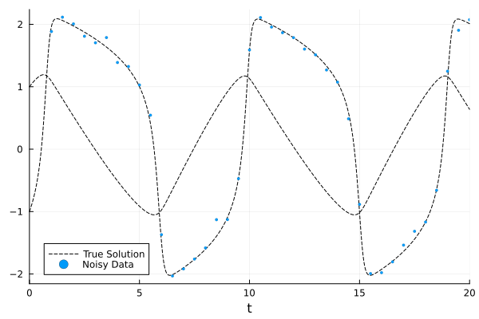
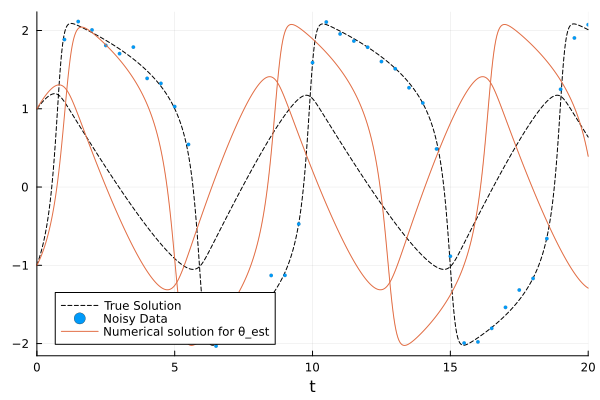
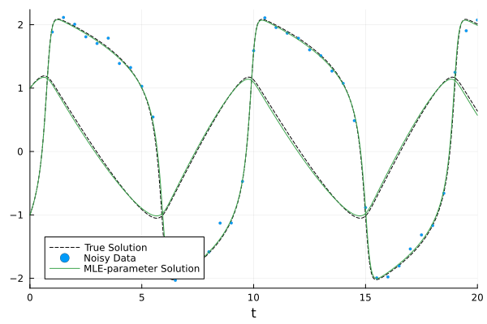

Parameter Inference with ProbNumDiffEq.jl
Let's assume we have an initial value problem (IVP)
\[\begin{aligned} \dot{y} &= f_\theta(y, t), \qquad y(t_0) = y_0, \end{aligned}\]
which we observe through a set $\mathcal{D} = \{u(t_n)\}_{n=1}^N$ of noisy data points
\[\begin{aligned} u(t_n) = H y(t_n) + v_n, \qquad v_n \sim \mathcal{N}(0, R). \end{aligned}\]
The question of interest is: How can we compute the marginal likelihood $p(\mathcal{D} \mid \theta)$? Short answer: We can't. It's intractable, because computing the true IVP solution exactly $y(t)$ is intractable. What we can do however is compute an approximate marginal likelihood. This is what ProbNumDiffEq.DataLikelihoods provides.
The specific problem, in code
Let's assume that the true underlying dynamics are given by a FitzHugh-Nagumo model
using ProbNumDiffEq, LinearAlgebra, OrdinaryDiffEq, PlotsPlots.theme(:default; markersize=2, markerstrokewidth=0.1)function f(du, u, p, t) a, b, c = p du[1] = c*(u[1] - u[1]^3/3 + u[2]) du[2] = -(1/c)*(u[1] - a - b*u[2])endu0 = [-1.0, 1.0]tspan = (0.0, 20.0)p = (0.2, 0.2, 3.0)true_prob = ODEProblem(f, u0, tspan, p)ODEProblem with uType Vector{Float64} and tType Float64. In-place: true
Non-trivial mass matrix: false
timespan: (0.0, 20.0)
u0: 2-element Vector{Float64}:
-1.0
1.0from which we generate some artificial noisy data
true_sol = solve(true_prob, Vern9(), abstol=1e-10, reltol=1e-10)times = 1:0.5:20σ = 1e-1H = [1 0;]odedata = [H*true_sol(t) .+ σ * randn() for t in times]plot(true_sol, color=:black, linestyle=:dash, label=["True Solution" ""])scatter!(times, stack(odedata)', color=1, label=["Noisy Data" ""])
Our goal is then to recover the true parameter p (and thus also the true trajectory plotted above) the noisy data.
Computing the negative log-likelihood
To do parameter inference - be it maximum-likelihod, maximum a posteriori, or full Bayesian inference with MCMC - we need to evaluate the likelihood of given a parameter estimate $\theta_\text{est}$, which corresponds to the probability of the data under the trajectory returned by the ODE solver
θ_est = (0.1, 0.1, 2.0)prob = remake(true_prob, p=θ_est)plot(true_sol, color=:black, linestyle=:dash, label=["True Solution" ""])scatter!(times, stack(odedata)', color=1, label=["Noisy Data" ""])sol = solve(prob, EK1(), adaptive=false, dt=1e-1)plot!(sol, color=2, label=["Numerical solution for θ_est" ""])
This quantity can be computed in multiple ways; see Data Likelihoods. Here we use ProbNumDiffEq.DataLikelihoods.fenrir_data_loglik:
using ProbNumDiffEq.DataLikelihoodsdata = (t=times, u=odedata)nll = -fenrir_data_loglik( prob, EK1(smooth=true); data, observation_noise_cov=σ^2, observation_matrix=H, adaptive=false, dt=1e-1)6325.866965931175This is the negative marginal log-likelihood of the parameter θ_est. You can use it as any other NLL: Optimize it to compute maximum-likelihood estimates or MAPs, or plug it into MCMC to sample from the posterior. In our paper [3] we compute MLEs by pairing Fenrir with Optimization.jl and ForwardDiff.jl. Let's quickly explore how to do this next.
Maximum-likelihood parameter inference
To compute a maximum-likelihood estimate (MLE), we just need to maximize $\theta \to p(\mathcal{D} \mid \theta)$ - that is, minimize the nll from above. We use Optimization.jl for this. First, define a loss function and create an OptimizationProblem
using Optimization, OptimizationOptimJLfunction loss(x, _) ode_params = x[begin:end-1] prob = remake(true_prob, p=ode_params) κ² = exp(x[end]) # we also optimize the diffusion parameter of the EK1 return -fenrir_data_loglik( prob, EK1(smooth=true, diffusionmodel=FixedDiffusion(κ², false)); data, observation_noise_cov=σ^2, observation_matrix=H, adaptive=false, dt=1e-1 )endfun = OptimizationFunction(loss, Optimization.AutoForwardDiff())optprob = OptimizationProblem( fun, [θ_est..., 1e0]; lb=[0.0, 0.0, 0.0, -10], ub=[1.0, 1.0, 5.0, 20] # lower and upper bounds)OptimizationProblem. In-place: true
u0: 4-element Vector{Float64}:
0.1
0.1
2.0
1.0Then, just solve it! Here we use LBFGS:
optsol = solve(optprob, LBFGS())p_mle = optsol.u[1:3]3-element Vector{Float64}:
0.21177213389608276
0.10137437266353098
3.0325401411382904Success! The computed MLE is quite close to the true parameter which we used to generate the data. As a final step, let's plot the true solution, the data, and the result of the MLE:
plot(true_sol, color=:black, linestyle=:dash, label=["True Solution" ""])scatter!(times, stack(odedata)', color=1, label=["Noisy Data" ""])mle_sol = solve(remake(true_prob, p=p_mle), EK1())plot!(mle_sol, color=3, label=["MLE-parameter Solution" ""])
Looks good!
API Documentation
For more details, see the API documentation of ProbNumDiffEq.DataLikelihoods at Data Likelihoods.
References
- [3]
- F. Tronarp, N. Bosch and P. Hennig. Fenrir: Physics-Enhanced Regression for Initial Value Problems. In: Proceedings of the 39th International Conference on Machine Learning, Vol. 162 of Proceedings of Machine Learning Research, edited by K. Chaudhuri, S. Jegelka, L. Song, C. Szepesvari, G. Niu and S. Sabato (PMLR, 17–23 Jul 2022); pp. 21776–21794.
- [10]
- M. Wu and M. Lysy. Data-Adaptive Probabilistic Likelihood Approximation for Ordinary Differential Equations. CoRR (2023), arXiv:2306.05566 [stat.ML].